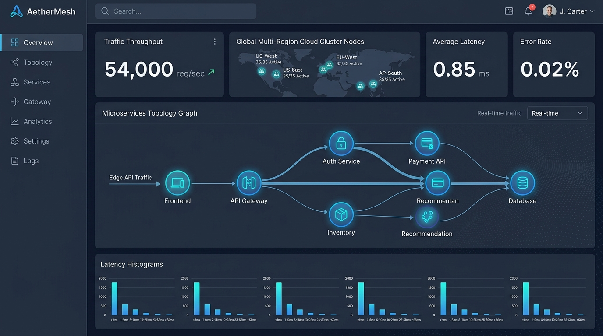
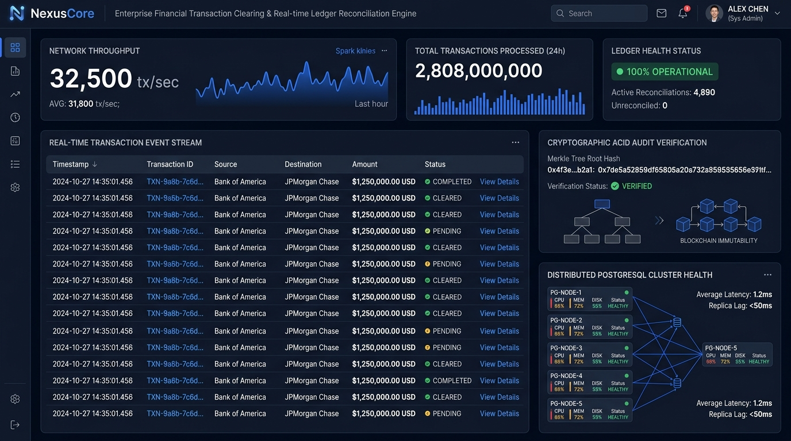
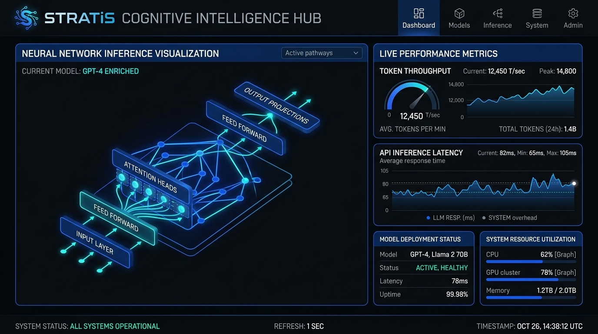
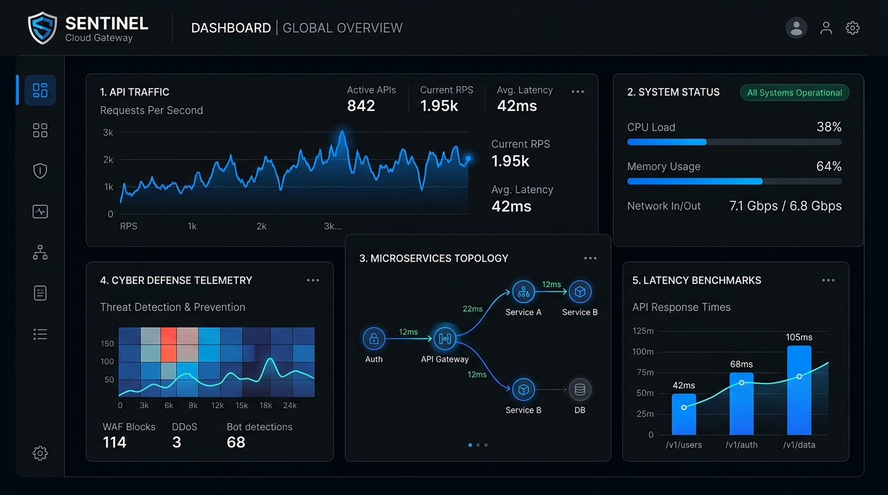

Engineering Resilient Digital Foundations & Cloud Infrastructure
STRATiS Technologies Inc. adalah studio rekayasa perangkat lunak enterprise dan infrastruktur komputasi berkinerja tinggi. Kami merancang backend mikroarsitektur dengan Go Clean Architecture, multi-region service mesh berlatensi sub-milidetik, dan orkestrasi sistem kecerdasan kognitif yang aman.
Tentang STRATiS Technologies
Mengenal STRATiS Technologies Inc. Entitas rekayasa perangkat lunak enterprise dan arsitektur komputasi awan berkinerja tinggi, menggabungkan presisi kode tingkat tinggi dengan ketahanan infrastruktur skala global.
Profil & Fokus Rekayasa
STRATiS Technologies Inc. (PT STRATiS Solusi Digital) adalah studio rekayasa perangkat lunak enterprise
dan arsitek infrastruktur komputasi awan. Kami didirikan untuk memecahkan tantangan arsitektural kompleks dalam volume trafik masif
melalui penerapan Clean Architecture pada ekosistem Go, distributed service mesh berbasis eBPF,
serta orkestrasi sistem kecerdasan kognitif yang aman.
Dengan filosofi rekayasa yang berakar pada ketepatan domain logic dan modularitas sistem, STRATiS mendampingi institusi
dan korporasi dalam membangun fondasi digital yang skalabel, aman, dan siap menghadapi lonjakan masa depan.
Visi & Misi Strategis
Visi: Menjadi pelopor global dalam arsitektur sistem terdistribusi berkinerja tinggi yang mendefinisikan standar baru efisiensi komputasi, ketahanan data, dan integrasi kecerdasan buatan enterprise.
Misi Utama:
• Precision Engineering: Mengembangkan backend Go modular berbasis Clean Architecture bebas keterikatan eksternal.
• Distributed Resilience: Membangun infrastruktur multi-region yang beroperasi dengan ketersediaan tinggi 99.99%.
• Intelligent Systems: Mengintegrasikan sistem kecerdasan kognitif dengan tata kelola keamanan ketat.
Presisi Rekayasa
Terinspirasi dari garis potong tajam (slash) pada huruf 'S' logo STRATiS, mencerminkan ketelitian desain kode, pemisahan domain logic, dan zero-defect implementation.
Kecepatan & Inovasi
Dilambangkan oleh speed lines di sudut kanan atas wordmark, menegaskan akselerasi inovasi dinamis dan kecepatan delivery sistem ke ranah produksi.
Alur Mulus Terpadu
Direfleksikan oleh garis lengkung (swoosh) di bagian bawah huruf 'R', menjamin integrasi microservices dan jalur data berjalan mulus tanpa friksi teknis.
Keandalan & Integritas
Dipancarkan oleh karakter huruf tebal dan warna solid sapphire blue (#0056d6) yang melambangkan keamanan sistem, data governance, dan profesionalisme kelas enterprise.
Font Sci-Fi & Tech Sans-Serif yang dimodifikasi miring untuk menciptakan visual akselerasi dan modernitas teknologi.
Representasi pemisahan lapisan Clean Architecture dan ketajaman logika bisnis tanpa dependensi acak.
Fondasi arsitektural yang menopang seluruh siklus hidup data agar tetap stabil di bawah beban trafik tinggi.
Warna biru solid melambangkan proteksi keamanan enterprise, integritas data, dan kepercayaan institusi.
Layanan & Kapabilitas Solusi
Layanan rekayasa perangkat lunak enterprise yang memadukan kecepatan backend Go berlatensi sub-milidetik, distributed service mesh multi-region, dan keunggulan sistem data terdistribusi.
Enterprise Backend & Microservices
Membangun sistem backend berskala enterprise menggunakan bahasa Go (Golang) berlandaskan Clean Architecture murni. Menghasilkan kode terstruktur rapi yang memisahkan aturan bisnis dari database dan framework luar, mampu menangani puluhan ribu concurrent requests per detik dengan konsumsi RAM minimal.
Distributed Cloud & Service Mesh
Perancangan infrastruktur cloud terdistribusi dengan edge routing berbasis kernel eBPF, enkripsi mutual TLS (mTLS) otomatis, mitigasi failover adaptif di bawah 20ms, dan observabilitas telemetri terdistribusi dengan OpenTelemetry.
Enterprise Cognitive Systems & Neural RAG
Pengintegrasian sistem kecerdasan kognitif otonom dan pemrosesan bahasa alami berkecepatan tinggi untuk ekosistem korporat. Meliputi pipeline Retrieval-Augmented Generation (RAG) aman dengan semantic chunking internal, validasi domain logic, dan enkripsi edge TLS 1.3.
Data Tier Clustering & Query Tuning
Optimasi menyeluruh pada basis data relasional (PostgreSQL / MySQL), desain skema relasi terindeks, distributed caching dengan Redis Cluster, serta penanganan event sourcing untuk memastikan transaksi tetap beroperasi dengan latensi sub-5ms.
Portfolio & Showcase Proyek Produksi
Studi kasus sistem perangkat lunak skala enterprise yang telah dirancang, dioptimalkan, dan dideploy oleh STRATiS Technologies Inc. Gunakan filter kategori di bawah untuk meninjau infrastruktur cloud, sistem transaksi perbankan, dan platform cerdas.

AetherMesh — Multi-Cloud Service Mesh & Edge Gateway
High-concurrency edge API gateway dan zero-trust service mesh berskala multi-region global yang menangani routing mikroarsitektur dengan latensi jaringan sub-milidetik. Menggunakan bahasa Go dan inspeksi kernel eBPF untuk mencapai efisiensi throughput ekstrem.

NexusCore — Real-Time Transaction Engine & Ledger
Mesin kliring transaksi finansial dan rekonsiliasi pembukuan real-time berkinerja tinggi untuk institusi perbankan. Dibangun berlandaskan Go Clean Architecture dengan model Event Sourcing dan snapshot in-memory Redis, menjamin penyelesaian transaksi ACID mutlak.

STRATiS Cognitive Intelligence Hub
Platform orkestrasi inferensi cerdas enterprise dan pemantauan throughput token secara real-time bertenaga kluster neural internal STRATiS. Dilengkapi visualisasi neural pathways dan knowledge retrieval aman berlatensi rendah.

Sentinel Cloud Gateway & Cyber Defense
API Gateway mikroarsitektur berkinerja tinggi yang menangani perutean request, rate limiting adaptif berbasis Redis, mitigasi serangan DDoS, dan inspeksi WAF dengan latensi jaringan sub-milidetik menggunakan arsitektur Go murni.
Kepemimpinan & Tata Kelola Arsitektur
Dipimpin oleh para profesional rekayasa perangkat lunak dan arsitek sistem terdistribusi dengan komitmen pada standar industri global.
Mengarahkan visi strategis, ekspansi bisnis teknologi, dan kemitraan enterprise STRATiS Technologies Inc. Berfokus pada adopsi arsitektur perangkat lunak berdaya tahan tinggi dan tata kelola teknologi berstandar internasional.
Memimpin arsitektur sistem cloud terdistribusi, perancangan microservices Go berbasis Clean Architecture, optimasi throughput database berlatensi sub-milidetik, dan infrastruktur zero-downtime.
Memimpin riset dan rekayasa sistem kecerdasan kognitif enterprise, pipeline Retrieval-Augmented Generation (RAG) aman, semantic search internal, serta mitigasi risiko tata kelola AI korporat.